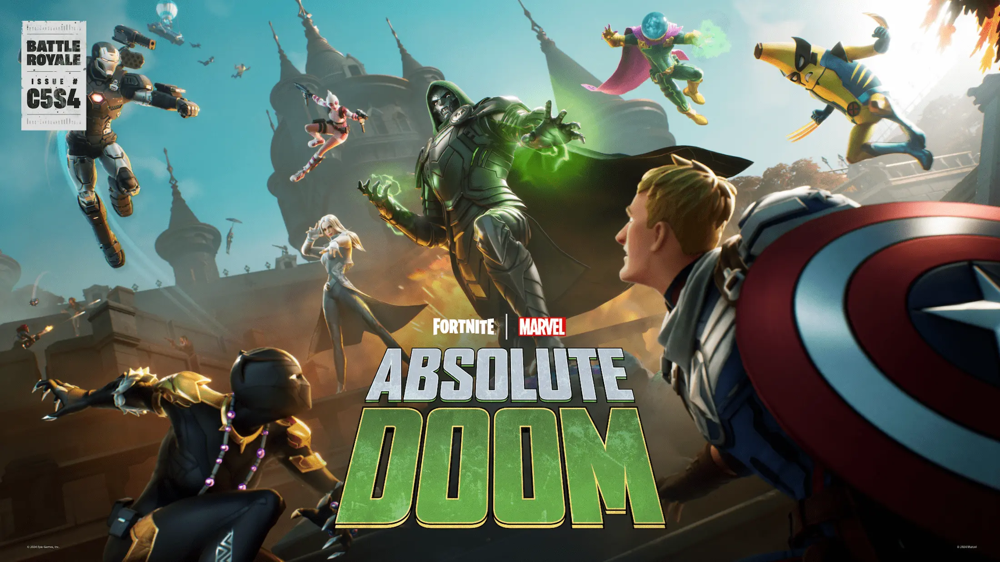
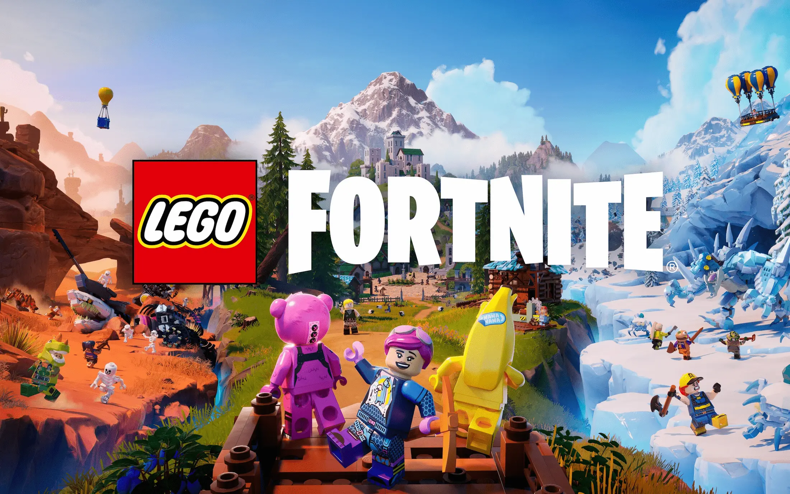

Fortnite FAQ
What is Fortnite?
Launched in 2017, Fortnite is a third person shooter video game that began as a survival horde defense game, but
evolved into a successful battle royale game, with many other new games within the game itself, such as a LEGO
Fortnite game that can be played inside of Fortnite.
What is Battle Royale?
Launched in 2017, during the rise of popularity of the battle royale video game genre, Fortnite Battle Royale took
the world by storm, with it's fun building mechanics mixed with shooting and a battle royale experience where you
and 99 other players are dropped out of the "Battle Bus" into an island where you must collect weapons, building
materials, and other items and eliminate the other players until you are the last player standing to claim the
"Victory Royale". Fortnite has become so popular that many other big media franchises have collaborated with it,
such as Marvel and Star Wars, and Disney now owns 9% of the company behind Fortnite, Epic Games. The current battle
royale season, "Absolute Doom", sees the dangerous Marvel villain, Doctor Doom, gain powers of the Pandora's Box,
and wage war on the Fortnite Island, and because of this, many other Marvel characters have currently been brought
to the game, such as Gwenpool, Mysterio, Black Panther, and more.

What is LEGO Fortnite?
Earlier this year, along with other game modes, Epic Games announced that as part of their new partnership with
the LEGO Group, they would be launching LEGO Fortnite inside of Fortnite. This is a survival game in the likes of
Minecraft, where you can play as LEGO versions of Fortnite characters and explore a brick world filled with many
different creatures and friendly Fortnite characters to follow you along on your adventures.
